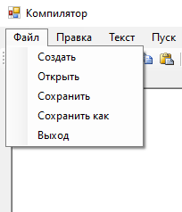
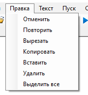
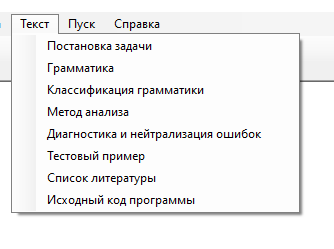
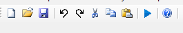

Меню текстового редактора
Пункт "Файл" меню текстового редактора
В пункте "Файл" меню текстового редактора реализован следующий функционал (см. рисунок 1):
- Создание документа
- Открытие документа
- Сохранение текущих изменений в документе
- Сохранение документа в новый файл
- Выход текствого редактора

Рис.1 - Пункт "Файл" в меню
Пункт "Правка" меню текстового редактора
В пункте "Правка" меню текстового редактора реализован следующий функционал (см. рисунок 2):
- Отмена изменений
- Повтор последнего изменения
- Вырезать текстовый фрагмент
- Копировать текстовый фрагмент
- Вставить текстовый фрагмент
- Удалить текстовый фрагмент
- Выделить все содержимое документа

Рис.2 - Пункт "Правка" в меню
Пункт "Текст" меню текстового редактора
В пункте "Текст" меню текстового редактора реализован следующий функционал (см. рисунок 3):
- Постановка задачи
- Грамматика
- Классификация грамматики
- Метод анализа
- Диагностика и нейтрализация ошибок
- Текстовый пример
- Список литературы
- Исходный код программы

Рис.3 - Пункт "Текст" в меню
Панель инструментов содержит кнопки вызова часто используемых пунктов меню:
- Создание документа
- Открытие документа
- Сохранение текущих изменений в документе
- Отмена изменений
- Повтор последнего изменения
- Вырезать текстовый документ
- Копировать текстовый фрагмент
- Вставить текстовый фрагмент
- Пуск
- Вызов справки

Рис.4 - Панель инструментов